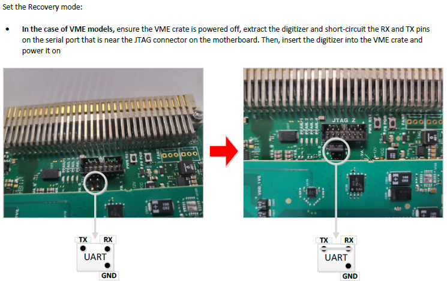

恢复出厂设置
当模块无法通过 USB 和网络方式访问时，可以通过以下方式重置到出厂设置。它会清除所有用户的固件、并且清除 liences PUC。重置之后用户需要重新上传固件以及 PUC 码。
首先将机箱关机，取下采集模块，
通过跳针短接 RX 和 TX，如上图所示。
将模块插入机箱，开启电源，直到前面板上只有 TTL 和 NIM 两个 LED 常亮。
通过 USB 或者网络访问重置页面。
USB 方式：http://caendgtz-usb-recovery （经测试这个方式无法访问！！！）
网络方式：http://192.168.0.254 （采集模块和电脑通过网线直连, 其中 192.168.0.254 是模块的默认 IP）
如上图所示，点击网页上的重置按钮。等待前面板上的只有 TTL 和 NIM 两个 LED 常亮。
关闭机箱，去除短接跳针。重启机箱电源。等待初始化成功，前面板只有 NIM 和 PLL-LOCK 两个 LED 常亮。